1072D10 MODULAR INLET MANIFOLD - R+R
- Path
- Procedures > 10 ENGINE UNIT > 1072 INLET AND EXHAUST MANIFOLDS > 1072D MODULAR INLET MANIFOLD (V.I.S.) > 1072D10 MODULAR INLET MANIFOLD - R+R
- Kind
- repair procedure (removal / refitting; the operation number is the code)
- Applies to
- engines: 1.8 T.SPARK, 2.0 JTS; all production periods
- Interactive page
- https://sloeber94.github.io/elrnDB-aGt/en/#/125001085
Applies to: engines: 2.0 JTS; all production periods
 Removing
Removing
 Refitting
RefittingPosition the vehicle on a lift.
PROCEED WITH DRAINING THE HIGH PRESSURE FUEL SYSTEM FOLLOWING THE INSTRUCTIONS GIVEN BELOW.
Start the engine.
Keep the engine idling for 2 minutes.
Detach the fuel pump relay.
Wait until the engine cuts out.
Try and start the engine: if the engine starts within 10 seconds wait for it to cut out, then try and start the engine again; if the engine does not start within 10 seconds, continue for another 5 seconds.
Wait for the engine to cool down.
Make sure that the ignition key is in the OFF position, then disconnect the negative battery terminal (-)
Description | Connector | |
|---|---|---|
- | Battery | See A1B BATTERY ( BATTERY NEGATIVE ) |
Proceed with the removal
Op. 1016A40 IGNITION COIL COVER ON CYLINDER HEAD- R+R.
Proceed with the removal
Op. 7055B54 UNDER-ENGINE GUARD - R R.
Proceed with the removal
Op. 1076B18 RIGID SECTION OF EXHAUST PIPE BETWEEN CATALYTIC CONVERTER AND SILENCER - R + R.
1. Undo the bolts (1a) and (1b) and remove the modular intake manifold mounting bracket (1c) after having released the bands from the electrical wiring.
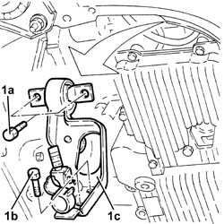
Applies to: engines: 2.0 JTS; all production periods
Proceed with the removal
Op. 1048A59 PIPE from flow meter to throttle casing hose - R.R..
Proceed with the removal
1. Disconnect the electrical connection from the throttle casing integrated with D.V.L. and release the electrical wiring from the band.
Description | Connector | |
|---|---|---|
1 | Throttle body actuator | See N75 THROTTLE BODY ACTUATOR ( CONNECTORS ) |
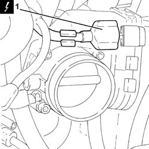
Applies to: engines: 2.0 JTS; all production periods
1. Disconnect the electrical connection for the fuel pressure regulator.
Description | Connector | |
|---|---|---|
1 | Fuel pressure regulator | See N77 FUEL PRESSURE REGULATOR ( CONNECTORS ) |
2. Disconnect the electrical connection from the fuel pressure sensor.
Description | Connector | |
|---|---|---|
2 | Fuel pressure sensor | See K83 FUEL PRESSURE SENSOR |
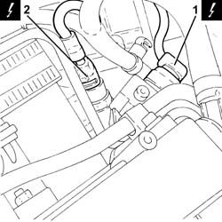
Applies to: engines: 2.0 JTS; all production periods
1. Disconnect the electrical connection from the phase transformer solenoid.
Description | Connector | |
|---|---|---|
1 | Variable valve timing actuator | See N76 TIMING VARIATOR ACTUATOR |
2. Disconnect the electrical connection from the switching control actuator enablement solenoid valve.
Description | Connector | |
|---|---|---|
2 | Variable geometry solenoid valve | See L15 VARIABLE GEOMETRY CONTROL SOLENOID ( CONNECTORS ) |
3. Disconnect the electrical connection for the cam angle sensor.
Description | Connector | |
|---|---|---|
3 | Timing sensor | See K47 TIMING SENSOR. ( CONNECTORS ) |
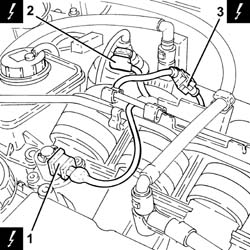
Applies to: engines: 2.0 JTS; all production periods
1. Disconnect the engine wiring electrical connections (1a) and (1b).
Description | Connector | |
|---|---|---|
1a | Front/engine coupling | See D4A FRONT/ENGINE CONNECTION ( CONNECTORS ) |
Description | Connector | |
|---|---|---|
1b | Front/engine coupling | See D4B FRONT/ENGINE CONNECTION ( CONNECTORS ) |
2. Loosen the band and disconnect the oil vapour recirculation pipe from the modular intake manifold.
3. Loosen the band and disconnect the vacuum intake pipe from the modular intake manifold.
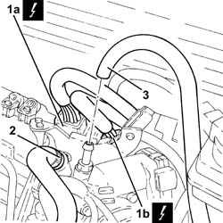
Applies to: engines: 2.0 JTS; all production periods
1. Disconnect the rapid connector for the fuel supply pipe and release it from the fastening on the modular intake manifold.
2. Disconnect the rapid connector for the fuel vapour recovery pipe.
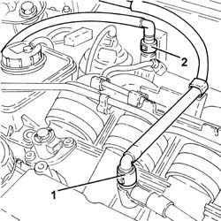
Applies to: engines: 2.0 JTS; all production periods
1. Disconnect the vacuum intake pipe from the air flow switching device actuator and release it from the fastening on the latter.
2. Disconnect the air flow switching device actuator linkage.
3. Undo the bolts (3a) and remove the air flow switching device control actuator (3b).
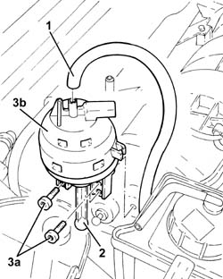
Applies to: engines: 2.0 JTS; all production periods
1. Undo the bolts (1a) and move the power assisted steering fluid reservoir (1b) sideways.
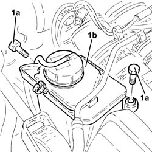
Applies to: engines: 2.0 JTS; all production periods
1. Loosen the band and disconnect the flexible section from the rigid section of the coolant return pipe to the engine coolant reservoir.
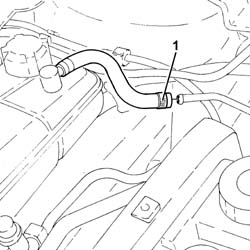
Applies to: engines: 2.0 JTS; all production periods
1. Release the rigid coolant return pipe to the engine coolant reservoir from the fastenings on the modular intake manifold and move it to the side.
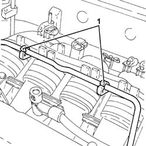
Applies to: engines: 2.0 JTS; all production periods
1. Undo the bolts (1a) and remove the throttle casing with D.V.L. (1b).
2. Remove the O-ring.
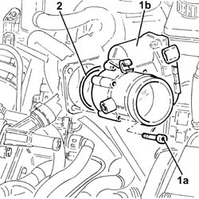
Applies to: engines: 2.0 JTS; all production periods
1. Undo the fuel pressure sensor and remove it.
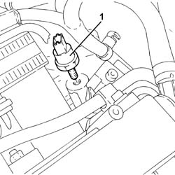
Applies to: engines: 2.0 JTS; all production periods
Undo the bolts fixing the brackets connecting the modular intake manifold to the intake manifold, intake manifold side.
1. Loosen the bands fixing the inlet hoses, modular intake manifold side.
2. Retract the modular intake manifold, releasing it from the intake hoses.
3. Loosen the remaining bands (3a) and remove the inlet hoses (3b).
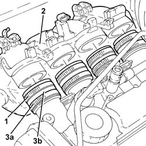
Applies to: engines: 2.0 JTS; all production periods
Move the modular intake manifold towards the ABS hydraulic unit.
1. Undo the bolts (1a) fixing the brackets (1b) connecting the modular intake manifold to the intake manifold, modular intake manifold side and remove them.
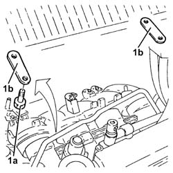
Applies to: engines: 2.0 JTS; all production periods
1. Lift up the modular intake manifold as necessary to disconnect the electrical connection for the fuel vapour solenoid valve.
Description | Connector | |
|---|---|---|
1 | Fuel vapour recovery solenoid valve | See L10 FUEL VAPOUR RECOVERY SOLENOID |
2. Remove the modular intake manifold.
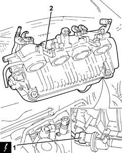
Applies to: engines: 2.0 JTS; all production periods
Refitting
RemovingPlace the modular intake manifold in position after having connected the electrical connection to the fuel vapour solenoid valve.
Place the connecting brackets for the modular intake manifold and the intake manifold in position and secure them to the modular intake manifold using the bolts.
Place the inlet hoses in position and secure them to the intake manifold using the bands.
Place the modular intake manifold in position and connect it to the inlet hoses.
Tighten the bands fixing the inlet hoses, modular intake manifold side.
Tighten the bolts fixing the brackets connecting the modular intake manifold to the intake manifold, intake manifold side.
1. Place the fuel pressure sensor in position and tighten it to the recommended torque.
Fastening | Component | Ø | Value (daNm) | |
|---|---|---|---|---|
1 | - | FUEL PRESSURE SENSOR | M10 | 2.0 ÷ 2.4 |
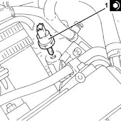
Applies to: engines: 2.0 JTS; all production periods
1. Place the O-ring in position.
2. Place the throttle casing integrated with D.V.L. (2a) in its housing and secure it by tightening the bolts (2b) to the recommended torque.
Fastening | Component | Ø | Value (daNm) | |
|---|---|---|---|---|
2b | Bolt | THROTTLE BODY | M6 | (Modular intake manifold side) 0.8 - 1.0 |
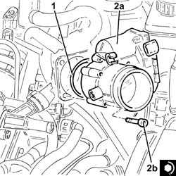
Applies to: engines: 2.0 JTS; all production periods
Connect the vacuum intake pipe to the modular intake manifold and tighten the band.
Connect the oil vapour recirculation pipe to the modular intake manifold and tighten the band.
Place the rigid coolant return pipe to the engine coolant reservoir in position and secure it to the modular intake manifold.
Connect the flexible section of the coolant return pipe to the engine coolant reservoir to the rigid section and tighten the band.
Place the power assisted steering fluid reservoir in its housing and secure it using the bolts.
Place the air flow switching device control actuator back in its housing and secure it using the bolts.
Connect the air flow switching device actuator linkage.
Connect the vacuum intake pipe to the air flow switching device actuator and secure it to the fastening on the latter.
Connect the rapid connector for the fuel vapour recovery pipe.
Cconnect the rapid connector for the fuel supply pipe and secure it to the modular intake manifold.
Connect the electrical connections for the engine wiring.
Connect the electrical connection for the cam angle sensor.
Connect the electrical connection to the switching control actuator enablement solenoid valve.
Connect the electrical connection to the phase transformer solenoid.
Connect the electrical connection to the fuel pressure sensor.
Connect the electrical connection to the fuel pressure regulator.
Connect the electrical connection to the throttle casing integrated with D.V.L. and fasten the wiring to the band.
Proceed with the refitting
Op. 1048A59 PIPE from flow meter to throttle casing hose - R.R..
Proceed with the refitting
Place the modular intake manifold mounting bracket in position and secure it using the bolts, then fasten the electrical wiring to the bands.
Proceed with the refitting
Op. 1076B18 RIGID SECTION OF EXHAUST PIPE BETWEEN CATALYTIC CONVERTER AND SILENCER - R + R.
Proceed with the refitting
Op. 7055B54 UNDER-ENGINE GUARD - R R.
Proceed with the refitting
Op. 1016A40 IGNITION COIL COVER ON CYLINDER HEAD- R+R.
Connect the negative battery terminal (-).
Remove the vehicle from the lift.
Applies to: engines: 1.8 T.SPARK; all production periods
Removing
Refitting- Position the vehicle on a lift.
- Make sure that the ignition key is in the OFF position, then disconnect the battery terminal (-).
Description | Connector | |
|---|---|---|
- | Battery | Vedere A001 BATTERIA |
- Undo the bolts fixing the mounting bracket to the modular intake manifold.
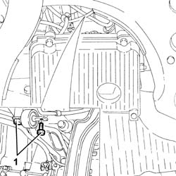
Applies to: engines: 1.8 T.SPARK; all production periods
- Op. 1016A40 COPERCHIO BOBINE ACCENSIONE SU TESTA CILINDRI - S.R.
1. Disconnect the electrical connection from the air flow meter.
Description | Connector | |
|---|---|---|
1 | Air flow meter | Vedere K41 MISURATORE PORTATA D'ARIA |
- Release the electrical wiring for the air flow meter from the fastening on the air intake hose.
2. Disconnect the air intake hose from the filter.
3. Disconnect the oil vapour recovery pipes from the tappet cover.
4. Disconnect the air intake hose from the throttle casing integrated with D.V.L.
5. Remove the air inlet hose (5a) complete with air flow meter (5b) and oil vapour recovery pipe (5c).
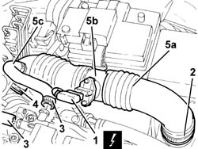
Applies to: engines: 1.8 T.SPARK; all production periods
- Op. 1056B60 TUBO COLLETTORE COMBUSTIBILE UNICO, COMPLETO DI ELETTROINIETTORI - S.R.
1. Disconnect the electrical connection from the engine coolant temperature sensor.
Description | Connector | |
|---|---|---|
1 | Temperature sensor/sender unit | Vedere K36 TRASMETTITORE TEMPERATURA MOTORE |
2. Undo the nut (2a) and disconnect the earth lead (2b) from the intake manifold.
Description | Connector | |
|---|---|---|
2 | Earth on engine | Vedere C40 MASSA SU MOTORE |
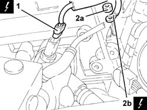
Applies to: engines: 1.8 T.SPARK; all production periods
1. Disconnect the electrical connection from the throttle casing integrated with D.V.L. and release the wiring from the band.
Description | Connector | |
|---|---|---|
1 | Integrated throttle casing actuator | Vedere N75 ATTUATORE CORPO FARFALLATO INTEGRATO |
2. Disconnect the electrical connections (2a) and (2b) from the injection/ignition control unit.
Description | Connector | |
|---|---|---|
2a | Engine management control unit | Vedere M10 CENTRALINA CONTROLLO MOTORE |
Description | Connector | |
|---|---|---|
2b | Engine management control unit | Vedere M10 CENTRALINA CONTROLLO MOTORE |
3. Undo the bolt (3a) and disconnect the earth lead (3b) from the injection/ignition control unit mounting.
Description | Connector | |
|---|---|---|
3b | Earth on engine | Vedere C40 MASSA SU MOTORE |
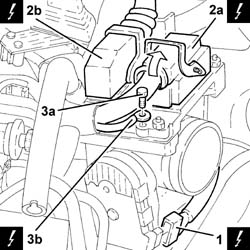
Applies to: engines: 1.8 T.SPARK; all production periods
1. Disconnect the engine front coupling.
Description | Connector | |
|---|---|---|
1 | Front/engine coupling | Vedere D4 GIUNZIONE ANTERIORE/MOTORE |
- Release the electrical wiring for the engine rpm sensor from the fastening band.
2. Disconnect the electrical connection for the detonation sensor.
Description | Connector | |
|---|---|---|
2 | Detonation sensor | Vedere K50 SENSORE DI BATTITO - 1 |
3. Disconnect the electrical connection for the Lambda sensor.
Description | Connector | |
|---|---|---|
3 | Lambda sensor on catalyzer | Vedere K17 SONDA LAMBDA SU POST-CATALIZZATORE-2 |
4. Disconnect the electrical connection for the cam angle sensor.
Description | Connector | |
|---|---|---|
4 | Timing sensor | Vedere K47 SENSORE DI FASE |
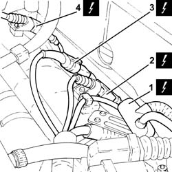
Applies to: engines: 1.8 T.SPARK; all production periods
1. Disconnect the electrical connection from the switching control actuator enablement solenoid valve.
Description | Connector | |
|---|---|---|
1 | Variable geometry solenoid valve | Vedere L15 ELETTROVALVOLA COMANDO GEOMETRIA VARIABILE |
- Release the electrical wiring from the modular intake manifold.
2. Disconnect the rapid connector for the fuel vapour recovery pipe.
3. Release the fuel vapour recovery pipe from the fastening on the power assisted steering fluid reservoir.
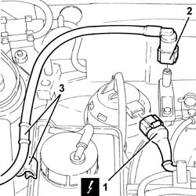
Applies to: engines: 1.8 T.SPARK; all production periods
1. Undo the bolts (1a) and move the power assisted steering fluid reservoir (1b) without disconnecting the pipes.
2. Disconnect the coolant return pipe from the engine coolant reservoir, reservoir side.
3. Release the rigid coolant return pipe to the engine coolant reservoir from the fastenings on the modular intake manifold and move it.
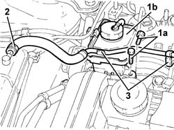
Applies to: engines: 1.8 T.SPARK; all production periods
1. Undo the bolts (1a) and remove the support (1b) complete with injection/ignition control unit (1c).
2. Undo the remaining bolt (2a) and remove the throttle casing with D.V.L. (2b).
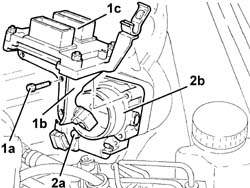
Applies to: engines: 1.8 T.SPARK; all production periods
- Disconnect the brake servo vacuum intake pipe from the modular intake manifold.
- Disconnect the electrical connection from the fuel vapour solenoid valve.
Description | Connector | |
|---|---|---|
2 | Fuel vapour recovery solenoid valve | See L10 FUEL VAPOUR RECOVERY SOLENOID |
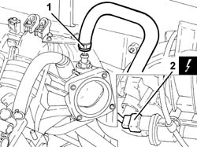
Applies to: engines: 1.8 T.SPARK; all production periods
- Loosen the bands fixing the hoses to the intake manifold.
- Undo the bolts (2a) and remove the modular intake manifold (2b) after having released the electrical wiring from the fastenings.
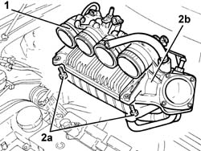
Applies to: engines: 1.8 T.SPARK; all production periods
- Place the modular intake manifold in its housing and secure it using the bolts.
- Tighten the bands fixing the hoses to the intake manifold.
- Connect the electrical connection to the fuel vapour solenoid valve.
- Connect the brake servo vacuum intake pipe to the single-acting valve.
- Place the throttle casing integrated with D.V.L. (1a) in its housing and secure it temporarily using the bolt (1b).
- Place the mounting (2a), complete with injection/ignition control unit (2b), back in its housing and secure it tightening the bolts (2c) to the recommended torque.
Fastening | Component | Ø | Value (daNm) | |
|---|---|---|---|---|
2c | Bolt | BUTTERFLY VALVE CASE/S (MPI) | M6 | (Modular intake manifold side) 0.8 - 1.1 |
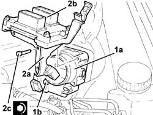
Applies to: engines: 1.8 T.SPARK; all production periods
- Place the coolant return pipe to the engine coolant reservoir in position and secure it using the bands on the air chamber.
- Connect the coolant return pipe to the engine coolant reservoir.
- Place the power assisted steering fluid reservoir in its housing and secure it using the bolts.
- Connect the rapid connector for the fuel vapour recovery pipe.
- Secure the fuel vapour recovery pipe to the fastening on the power assisted steering fluid reservoir.
- Connect the electrical connection to the switching control actuator enablement solenoid valve.
- Connect the electrical connection for the cam angle sensor.
- Connect the electrical connection for the Lambda sensor.
- Connect the electrical connection for the detonation sensor.
- Secure the electrical wiring for the engine rpm sensor using the fastening band.
- Connect the engine front coupling.
- Connect the earth lead to the injection/ignition control unit mounting and secure it using the bolt.
- Connect the electrical connections to the injection/ignition control unit.
- Connect the electrical connection to the throttle casing integrated with D.V.L. and fasten the wiring to the band.
- Connect the earth lead to the intake manifold and secure it using the nut.
- Connect the electrical connection to the engine coolant temperature sensor.
- Fasten the electrical wiring to the modular intake manifold.
- Op. 1056B60 TUBO COLLETTORE COMBUSTIBILE UNICO, COMPLETO DI ELETTROINIETTORI - S.R.
- Place the air intake hose complete with air flow meter back in its housing and connect it to the air filter and to the throttle casing integrated with D.V.L.
- Connect the oil vapour recovery pipes to the tappet cover.
- Connect the electrical connection for the air flow meter and fasten the wiring to the air intake hose.
- Op. 1016A40 IGNITION COIL COVER ON CYLINDER HEAD- R+R
- Tighten the bolts fixing the mounting bracket to the modular intake manifold.
- Connect the negative battery terminal (-).
- Remove the vehicle from the lift.
Topics linked from this page (5)
- 1016A40 IGNITION COIL COVER ON CYLINDER HEAD- R+R
- 1048A59 PIPE from flow meter to throttle casing hose - R.R.
- 1076B18 RIGID SECTION OF EXHAUST PIPE BETWEEN CATALYTIC CONVERTER AND SILENCER - R + R
- 5530B10 BATTERY - R+R
- 7055B54 UNDER-ENGINE GUARD - R R